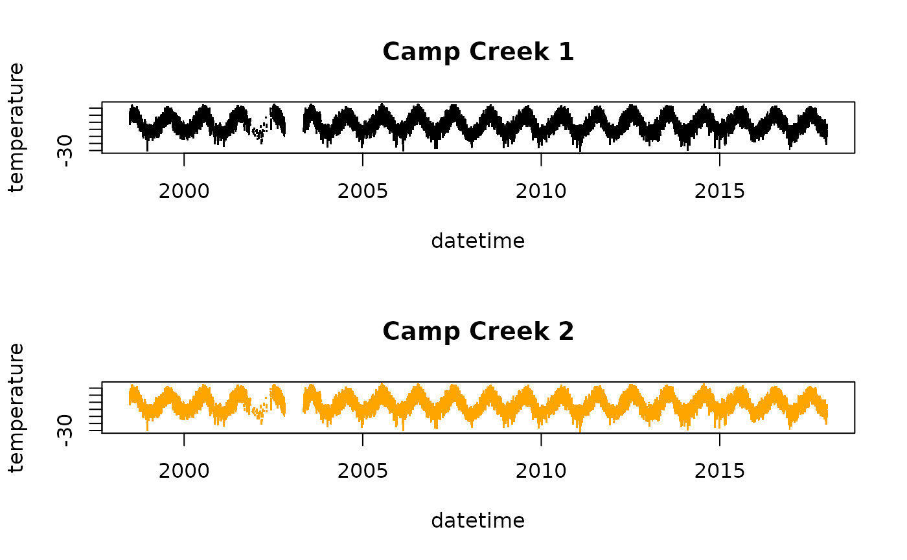
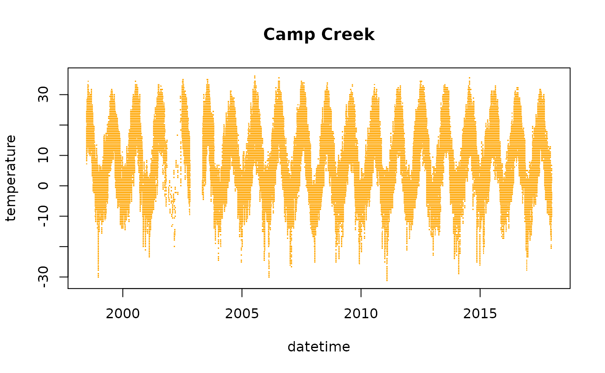
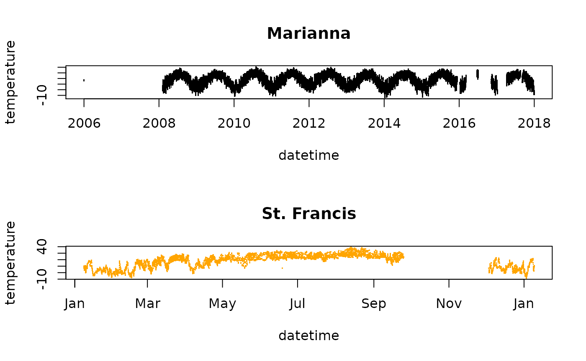

vignettes/articles/Identifying_Unique_Locations.Rmd
Identifying_Unique_Locations.RmdWhen working with environmental monitoring time series, one of the first things you have to do is create unique identifiers for each individual time series. In an ideal world, each environmental time series would have both a locationID and a sensorID that uniquely identify the spatial location and specific instrument making measurements. A unique timeseriesID could be produced as locationID_sensorID. Location metadata associated with each time series would contain basic information needed for downstream analysis including at least:
timeseriesID, locationID, sensorID, longitude, latitude, ...
locationID.sensorID.longitude, latitude.data table with timeseriesID.Unfortunately, we are rarely supplied with a truly unique and truly spatial locationID. Instead we often use sensorID or an associated non-spatial identifier as a standin for locationID.
Complications we have seen include:
locationID.locationID.The MazamaLocationUtils package provides a solution to these problems by storing spatial metadata in simple tables in a standard directory. These tables will be referred to as collections. Location lookups can be performed with geodesic distance calculations where a location is assigned to a pre-existing known location if it is within radius meters. These will be extremely fast.
If no previously known location is found, the relatively slow (seconds) creation of a new known location metadata record can be performed and then added to the growing collection.
For collections of stationary environmental monitors that only number in the thousands, this entire collection (i.e. “database”) can be stored as either a .rda or .csv file and will be under a megabyte in size making it fast to load. This small size also makes it possible to store multiple known location files, each created with different locations and different radii to address the needs of different scientific studies.
While initially exploring spatial metadata for RAWS sites, the MazamaLocationUtils::table_findOverlappingLocations() function will identify locations that seem too close to be considered “unique”. It will ultimately be up to the user of the data to decide what to do with “overlapping” time series.
The following examples demonstrate how to explore RAWS location metadata using functionality from MazamaLocationUtils.
Well formamtted archival RAWS data is avaialable from https://cefa.dri.edu/raws.
Metadata containing station IDs and location information can be accessed using the fw13_createMetadtat() function
library(RAWSmet) library(MazamaSpatialUtils) setSpatialDataDir("~/Data/Spatial") meta <- fw13_createMetadata(verbose = TRUE) head(meta)
## # A tibble: 6 x 8
## nwsID longitude latitude elevation siteName countryCode stateCode timezone
## <chr> <dbl> <dbl> <dbl> <chr> <chr> <chr> <chr>
## 1 021503 -114. 34.1 360 AHAKAHV P… US AZ America/…
## 2 500726 -141. 62.8 1800 ALCAN HWY… US AK America/…
## 3 020401 -109. 33.8 8188 ALPINE US AZ America/…
## 4 500742 -146. 65.0 1100 ANGEL CRE… US AK America/…
## 5 032101 -92.8 35.6 1600 ARMSTEAD … US AR America/…
## 6 010702 -87.3 34.3 989 BANKHD US AL America/…This dataframe of 1791 records contains unique identifiers and locations.
nrow(meta)
## [1] 1791meta %>% dplyr::select(nwsID, longitude, latitude) %>% dplyr::n_distinct()
## [1] 1791We can use the MazamaLocationUtils to discover those locations that are too close to be considered unique “known locations”.
If we assume that stations spaced <200 meters apart are measuring the same parcel of air, we can say that unique “known locations” for RAWS stations should have a radius of 100m. We can use the following code see if this is the case:
tooCloseTbl <- MazamaLocationUtils::table_findOverlappingLocations(meta, radius = 100) print(tooCloseTbl)
## # A tibble: 7 x 3
## row1 row2 distance
## <int> <int> <dbl>
## 1 738 739 30.9
## 2 750 751 38.6
## 3 770 771 55.7
## 4 1597 1598 56.7
## 5 120 179 65.9
## 6 325 326 76.1
## 7 493 494 187.# Extract siteName from meta dataframe for ( i in seq_len(nrow(tooCloseTbl)) ) { rows <- as.numeric(tooCloseTbl[i, 1:2]) cat(sprintf("\n%5.1f meters apart:\n", tooCloseTbl$distance[i])) print(meta[rows, c('longitude', 'latitude', 'siteName')]) }
##
## 30.9 meters apart:
## # A tibble: 2 x 3
## longitude latitude siteName
## <dbl> <dbl> <chr>
## 1 -155. 19.3 KEALAKOMO 2
## 2 -155. 19.3 KEALAKOMO 2
##
## 38.6 meters apart:
## # A tibble: 2 x 3
## longitude latitude siteName
## <dbl> <dbl> <chr>
## 1 -157. 21.1 MOLOKAI1
## 2 -157. 21.1 MOLOKAI 1
##
## 55.7 meters apart:
## # A tibble: 2 x 3
## longitude latitude siteName
## <dbl> <dbl> <chr>
## 1 -158. 21.5 WAIANAE VALLEY
## 2 -158. 21.5 WAIANAE VALLEY
##
## 56.7 meters apart:
## # A tibble: 2 x 3
## longitude latitude siteName
## <dbl> <dbl> <chr>
## 1 -108. 42.6 CAMP CREEK
## 2 -108. 42.6 CAMP CREEK
##
## 65.9 meters apart:
## # A tibble: 2 x 3
## longitude latitude siteName
## <dbl> <dbl> <chr>
## 1 -90.7 34.8 MARRIANNA
## 2 -90.7 34.8 ST. FRANCIS
##
## 76.1 meters apart:
## # A tibble: 2 x 3
## longitude latitude siteName
## <dbl> <dbl> <chr>
## 1 -120. 40.0 COYOTE
## 2 -120. 40.0 COYOTE
##
## 186.7 meters apart:
## # A tibble: 2 x 3
## longitude latitude siteName
## <dbl> <dbl> <chr>
## 1 -109. 37.5 MOCKINGBIRD
## 2 -109. 37.5 SAN JUAN PORTABLEGiven that many of these nwsID pairs share the same siteName, we can create a timeseries plot do see which of two possible situations we all into:
Obtain timeseries objects (with separate meta and data dataframes) using the nwsID obtained from each record:
# CAMP CREEK stations are separated by 56.7 m, row #4 from tooCloseTbl # ... # 4 1597 1598 56.7 nwsID_1 <- meta$nwsID[1597] nwsID_2 <- meta$nwsID[1598] # Get timeseries data CampCreek_1 <- fw13_createTimeseriesObject(nwsID_1, meta) CampCreek_2 <- fw13_createTimeseriesObject(nwsID_2, meta) # Each timeseries object consists of 'meta' and 'data'. # We are only interested in the 'data' part: head(CampCreek_1$data)
## # A tibble: 6 x 9
## datetime temperature humidity windSpeed windDirection maxGustSpeed
## <dttm> <dbl> <dbl> <dbl> <dbl> <dbl>
## 1 1998-06-25 03:00:00 50 58.5 14 216 30
## 2 1998-06-25 04:00:00 50.5 58 17 231 41
## 3 1998-06-25 05:00:00 51 57.5 18 234 40
## 4 1998-06-25 06:00:00 51 57.5 19 236 43
## 5 1998-06-25 07:00:00 51 57.5 19 235 38
## 6 1998-06-25 08:00:00 51.5 57.5 21 251 37
## # … with 3 more variables: maxGustDirection <dbl>, precipitation <dbl>,
## # solarRadiation <dbl># ----- Plot them separately ----- # Hint: use pch = '.' to speed up graphical rendering layout(matrix(seq(2))) plot(CampCreek_1$data[,c('datetime', 'temperature')], col = 'black', pch = '.', main = "Camp Creek 1") plot(CampCreek_2$data[,c('datetime', 'temperature')], col = 'orange', pch = '.', main = "Camp Creek 2")

layout(1) # ----- Plot them together ----- # Set up x- and y-limits to cover both timeseries xlim <- range(c( range(CampCreek_1$data$datetime, na.rm = TRUE), range(CampCreek_2$data$datetime, na.rm = TRUE) )) ylim <- range(c( range(CampCreek_1$data[,'temperature'], na.rm = TRUE), range(CampCreek_2$data[,'temperature'], na.rm = TRUE) )) # Now plot the temperature timeseries to look for overlaps # (use pch = 0 to speed up graphical rendering) plot(CampCreek_1$data[,c('datetime', 'temperature')], xlim = xlim, ylim = ylim, col = 'black', pch = '.', main = "Camp Creek") points(CampCreek_2$data[,c('datetime', 'temperature')], col = 'orange', pch = '.')

This next example shows non-overlapping timeseries
# MARIANNA/ST. FRANCSIS stations are separated by 56.7 m, row #5 from tooCloseTbl # ... # 5 120 179 65.9 nwsID_1 <- meta$nwsID[120] nwsID_2 <- meta$nwsID[179] # Get timeseries data Marianna <- fw13_createTimeseriesObject(nwsID_1, meta) St_Francis <- fw13_createTimeseriesObject(nwsID_2, meta) # Each timeseries object consists of 'meta' and 'data'. # We are only interested in the 'data' part: # ----- Plot them separately ----- layout(matrix(seq(2))) plot(Marianna$data[,c('datetime', 'temperature')], col = 'black', pch = '.', main = "Marianna") plot(St_Francis$data[,c('datetime', 'temperature')], col = 'orange', pch = '.', main = "St. Francis")

layout(1) # ----- Plot them together ----- # Set up x- and y-limits to cover both timeseries xlim <- range(c( range(Marianna$data$datetime, na.rm = TRUE), range(St_Francis$data$datetime, na.rm = TRUE) )) ylim <- range(c( range(Marianna$data[,'temperature'], na.rm = TRUE), range(St_Francis$data[,'temperature'], na.rm = TRUE) )) # Now plot the temperature timeseries to look for overlaps # (use pch = 0 to speed up graphical rendering) plot(Marianna$data[,c('datetime', 'temperature')], xlim = xlim, ylim = ylim, col = 'black', pch = '.') points(St_Francis$data[,c('datetime', 'temperature')], col = 'orange', pch = '.', main = "Marianna/St. Francis")